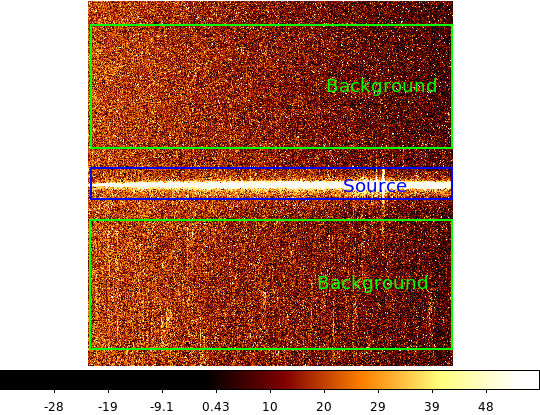
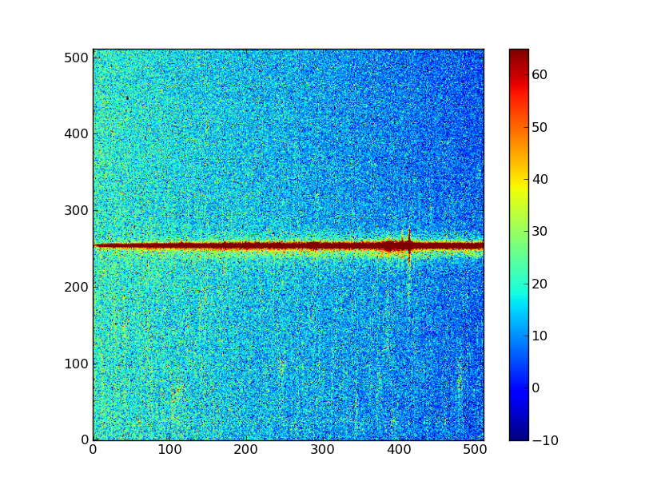
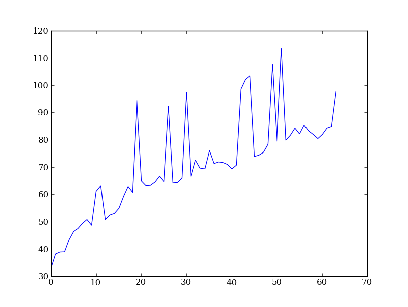
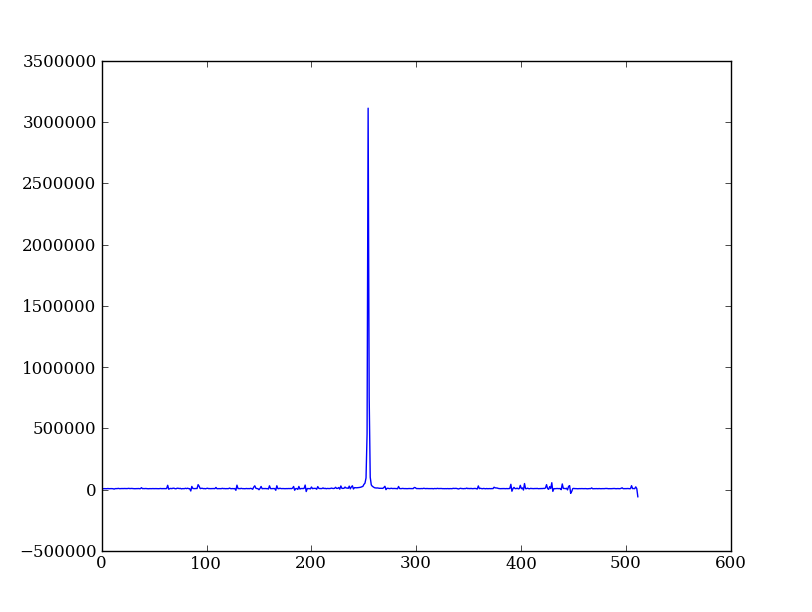
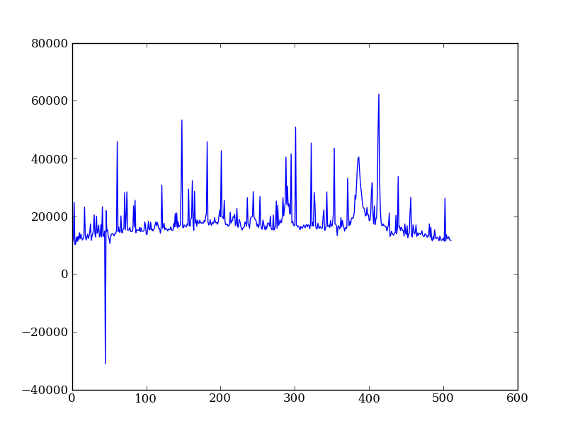
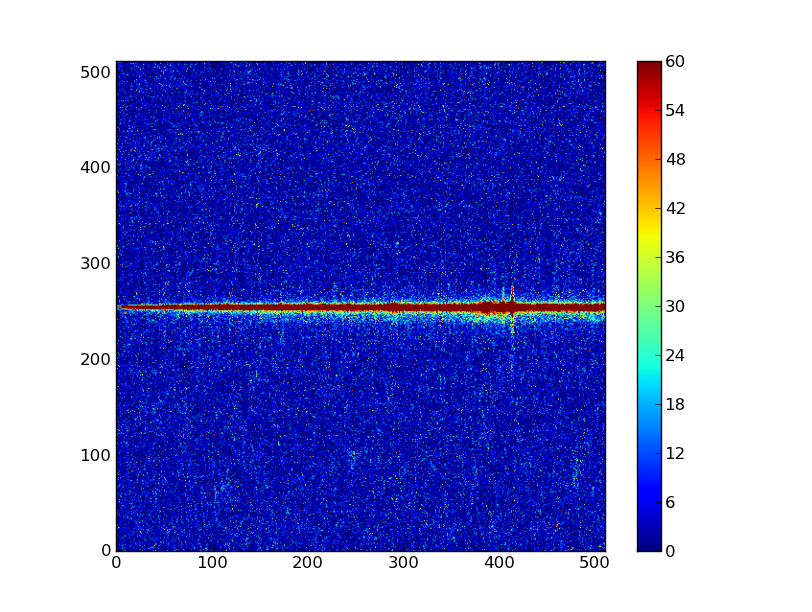
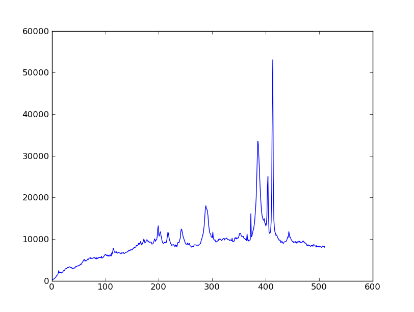

NumPy¶
NumPy is at the core of nearly every scientific Python application or module since it provides a fast N-d array datatype that can be manipulated in a vectorized form. This will be familiar to users of IDL or Matlab.
NumPy has a good and systematic basic tutorial available. It is highly recommended that you read this tutorial to fill in the gaps left by this workshop, but on its own it’s a bit dry for the impatient astronomer.
Here we’ll learn NumPy by performing a very simple reduction of a 2-dimensional long slit spectrum (3C120 from HST/STIS):
- Read in the 2-d image
- Plot the spatial profile and raw spectrum
- Filter cosmic rays from the background
- Fit for the background and subtract
- Sum the source signal
| 2-d longslit image | Final 1-d spectrum |
|---|---|
|  | 
|
{kind=link}
Setup¶
Before going further you need to get the example data and script files for the workshop. Now that you have a working Python installation we can do this without worrying about details of the platform (e.g. linux has wget, Mac has curl, Windows might not have tar, etc etc).
Now start IPython (“ipython –matplotlib”) or use your existing session and enter:
import numpy as np
import matplotlib.pyplot as plt
from astropy.extern.six.moves.urllib import request
import tarfile
url = 'http://python4astronomers.github.com/core/core_examples.tar'
tarfile.open(fileobj=request.urlopen(url), mode='r|').extractall()
cd py4ast/core
ls
Leave this IPython session open for the rest of the workshop.
Exercise (for the interested reader): How did that code above work?
Explain what’s happening in each part of the previous code snippet to grab the file at a URL and untar it. Google on “python3 urllib” and “python tarfile” to find the relevant module docs. Figure out how you would use the tarfile module to create a tarfile.
Click to Show/Hide Solution
- urllib.request.urlopen(url) opens the URL as a streaming file-like object
- mode='r|' means ``tarfile is expecting a streaming file-like object with no ability to seek in the file
- tarfile.open(..).extractall then extracts the tar archive
Creating a tarfile is left for the reader to solve.
Read in the 2-d image¶
First read in the long-slit spectrum data. The standard file format available for download from MAST is a FITS file with three identically sized images providing the 2-d spectral intensity, error values, and data quality for each pixel. The slit direction is along the rows (up and down) and wavelength is in columns (left to right).
from astropy.io import fits
hdus = fits.open('3c120_stis.fits.gz')
hdus
Use the ? to get a little more detail on the hdus object:
hdus?
Now give meaningful names to each of the three images that are available in the FITS HDU list. You can access element n in a list with the index [n], where the count starts from 0:
primary = hdus[0].data # Primary (NULL) header data unit
img = hdus[1].data # Intensity data
err = hdus[2].data # Error per pixel
dq = hdus[3].data # Data quality per pixel
Next have a look at the images using one of the standard Matplotlib plotting functions:
plt.imshow(img)
As you can see, it is hard to see things. So, let’s set a few option for this plot. First, we want the origin in the lower left instead of the upper left corner:
plt.clf()
plt.imshow(img, origin = 'lower')
Second, let’s change the scaling to something more sensible. By default, plt.imshow() scales the colorbar from the minimum to the maximum value. In our case that is not the best option. We can set a lower and upper bound and add a colorbar to our plot:
plt.clf()
plt.imshow(img, origin = 'lower', vmin = -10, vmax = 65)
plt.colorbar()
Your plot should not look like this (it is possible that the colormap differs, if your matplotlib has different defaults set).
{kind=link}
Exercise: View the error and data quality images
Bring up a viewer window for the other two images. Play with the toolbar buttons on the lower-left (hint: try the four on the right first, then imagine a web browser for the three on the left). Does the save button work for you?
Click to Show/Hide Solution
# Errors
plt.clf()
plt.imshow(err, origin = 'lower', vmin = 5, vmax = 25)
plt.colorbar()
# Data quality
plt.clf()
plt.imshow(dq, origin = 'lower', vmax = 25)
plt.colorbar()
{kind=link}
{kind=link}
Now discover a little bit about the images you have read in, first with ?:
img?
Next use help and note the slightly different information that you get:
help(img)
Use tab completion to see all the methods in short form:
img.<TAB>
Finally find the shape of the image and its minimum value:
img.shape # Get the shape of img
img.min() # Call object method min with no arguments
NumPy basics¶
Before going further on the spectral extraction project we need to learn about a few key features of NumPy.
Making arrays¶
Arrays can be created in different ways. The “>>>” indicates the input to Python:
>>> a = np.array([10, 20, 30, 40]) # create an array from a list of values
>>> a
array([10, 20, 30, 40]
>>> b = np.arange(4) # create an array of 4 integers, from 0 to 3
>>> b
array([0, 1, 2, 3]),
>>> np.arange(0.0, 10.0, 0.1) # create a float array from 0 to 100 stepping by 0.1
array([ 0. , 0.1, 0.2, 0.3, 0.4, 0.5, 0.6, 0.7, 0.8, 0.9, 1. ,
1.1, 1.2, 1.3, 1.4, 1.5, 1.6, 1.7, 1.8, 1.9, 2. , 2.1,
2.2, 2.3, 2.4, 2.5, 2.6, 2.7, 2.8, 2.9, 3. , 3.1, 3.2,
3.3, 3.4, 3.5, 3.6, 3.7, 3.8, 3.9, 4. , 4.1, 4.2, 4.3,
4.4, 4.5, 4.6, 4.7, 4.8, 4.9, 5. , 5.1, 5.2, 5.3, 5.4,
5.5, 5.6, 5.7, 5.8, 5.9, 6. , 6.1, 6.2, 6.3, 6.4, 6.5,
6.6, 6.7, 6.8, 6.9, 7. , 7.1, 7.2, 7.3, 7.4, 7.5, 7.6,
7.7, 7.8, 7.9, 8. , 8.1, 8.2, 8.3, 8.4, 8.5, 8.6, 8.7,
8.8, 8.9, 9. , 9.1, 9.2, 9.3, 9.4, 9.5, 9.6, 9.7, 9.8,
9.9]),
>>> np.linspace(-np.pi, np.pi, 5) # create an array of 5 evenly spaced samples from -pi to pi
array([-3.14159265, -1.57079633, 0. , 1.57079633, 3.14159265]))
New arrays can be obtained by operating with existing arrays:
>>> a + b**2 # elementwise operations
array([10, 21, 34, 49])
Arrays may have more than one dimension:
>>> f = np.ones([3, 4]) # 3 x 4 float array of ones
>>> f
array([[ 1., 1., 1., 1.],
[ 1., 1., 1., 1.],
[ 1., 1., 1., 1.]]),
>>> g = np.zeros([2, 3, 4], dtype=int) # 2 x 3 x 4 int array of zeros
array([[[0, 0, 0, 0],
[0, 0, 0, 0],
[0, 0, 0, 0]],
[[0, 0, 0, 0],
[0, 0, 0, 0],
[0, 0, 0, 0]]]),
>>> i = np.zeros_like(f) # array of zeros with same shape/type as f
array([[ 0., 0., 0., 0.],
[ 0., 0., 0., 0.],
[ 0., 0., 0., 0.]]))
You can change the dimensions of existing arrays:
>>> w = np.arange(12)
>>> w.shape = [3, 4] # does not modify the total number of elements
array([[ 0, 1, 2, 3],
[ 4, 5, 6, 7],
[ 8, 9, 10, 11]]),
>>> x = np.arange(5)
>>> x
array([0, 1, 2, 3, 4]),
>>> y = x.reshape(5, 1)
>>> y = x.reshape(-1, 1) # Same thing but NumPy figures out correct length
>>> y
array([[0],
[1],
[2],
[3],
[4]]))
It is possible to operate with arrays of different dimensions as long as they fit well (this is known as broadcasting in NumPy):
>>> x + y * 10
array([[ 0, 1, 2, 3, 4],
[10, 11, 12, 13, 14],
[20, 21, 22, 23, 24],
[30, 31, 32, 33, 34],
[40, 41, 42, 43, 44]])
Exercise: Make a ripple
Calculate a surface z = cos(r) / (r + 5) where r = sqrt(x**2 + y**2). Set x to an array that goes from -20 to 20 stepping by 0.25 Make y the same as x but “transposed” using the reshape trick above. Use plt.imshow to display the image of z.
Click to Show/Hide Solution
x = np.arange(-20, 20, 0.25)
y = x.reshape(-1, 1)
r = np.sqrt(x**2 + y**2)
z = np.cos(r) / (r + 5)
plt.imshow(z, origin = 'lower)
{kind=link}
Array access and slicing¶
NumPy provides powerful methods for accessing array elements or particular subsets of an array, e.g. the 4th column or every other row. This is called slicing. The outputs below illustrate basic slicing, but you don’t need to type these examples:
>>> a = np.arange(20).reshape(4,5)
>>> a
array([[ 0, 1, 2, 3, 4],
[ 5, 6, 7, 8, 9],
[10, 11, 12, 13, 14],
[15, 16, 17, 18, 19]])
>>> a[2, 3] # select element in row 2, col 3 (counting from 0)
13
>>> a[2, :] # select every element in row 2
array([10, 11, 12, 13, 14])
>>> a[:, 0] # select every element in col 0
array([ 0, 5, 10, 15])
>>> a[0:3, 1:3]
array([[ 1, 2],
[ 6, 7],
[11, 12]])
As a first practical example plot column 300 of the longslit image to look at the spatial profile:
plt.figure() # Clear the existing plot -- by default matplotlib overplots.
plt.plot(img[:, 300])
{kind=link}
The full slicing syntax also allows for a step size:
<slice> = i0:i1:step
array[<slice0>, <slice1>, ...]
- i0 is the first index value (default is zero if not provided)
- i1 is the index upper bound (default is last element index + 1)
- step is the step size (default is one). When step is not specified then the final ”:” is not required.
Exercise: Slice the error array
- For row 254 of the error array err plot columns 10 to 200 stepping by 3.
- Print a rectangular region slice of the data quality with rows 251 to 253 (inclusive) and columns 101 to 104 (inclusive). What did you learn about the index upper bound value?
Click to Show/Hide Solution
plt.clf()
plt.plot(err[254, 10:200:3])
dq[251:254, 101:105]
The index upper bound i1 is one more than the final index that gets included in the slice. In other words the slice includes everything up to, but not including, the index upper bound i1. There are good reasons for this, but for now just accept and learn it.
{kind=link}
Plot the spatial profile and raw spectrum¶
Plot the spatial profile by summing along the wavelength direction:
profile = img.sum(axis=1)
plt.figure()
plt.plot(profile)
Now plot the spectrum by summing along the spatial direction:
spectrum = img.sum(axis=0)
plt.figure()
plt.plot(spectrum)
Since most of the sum is in the background region there is a lot of noise and cosmic-ray contamination.
 {kind=link}
{kind=link}
Exercise: Use slicing to make a better spectrum plot
Use slicing to do the spectrum sum using only the rows in the image where there is a signal from the source. Hint: zoom into the profile plot to find the right row range.
Click to Show/Hide Solution
spectrum = img[250:260, :].sum(axis=0)
plt.clf()
plt.plot(spectrum)
{kind=link}
Filter cosmic rays from the background¶
Plot five columns (wavelength) from the spectrum image as follows:
plt.clf()
plt.plot(img[:, 254:259])

The basic idea in spectral extraction is to subtract out the background and sum over rows with the source signal.
It’s evident that there are significant cosmic ray defects in the data. In order to do a good job of subtracting the background we need to filter them out. Doing this correctly in general is difficult and in reality one would just use the answers already provided by STSci.
Strategy: Use a median filter to smooth out single-pixel deviations. Then use sigma-clipping to remove large variations between the actual and smoothed image.
import scipy.signal
img_sm = scipy.signal.medfilt(img, 5)
sigma = median(err)
bad = np.abs(img - img_sm) / sigma > 8.0
img_cr = img.copy()
img_cr[bad] = img_sm[bad]
img_cr[230:280,:] = img[230:280,:] # Filter only for background
Check if it worked:
plt.clf()
plt.plot(img_cr[:, 254:259])
{kind=link}
This introduces the important concept of slicing with a boolean mask. Let’s look at a smaller example:
>>> a = np.array([1, 4, -2, 4, -5])
>>> neg = (a < 0) # Parentheses here for clarity but are not required
>>> neg
array([False, False, True, False, True], dtype=bool)
>>> a[neg] = 0
>>> a
array([1, 4, 0, 4, 0])
A slightly more complex example shows that this works the same on N-d arrays and that you can compose logical expressions:
>>> a = np.arange(25).reshape(5,5)
>>> ok = (a > 6) & (a < 17) # "ok = a > 6 & a < 17" will FAIL!
>>> a[~ok] = 0 # Note the "logical not" operator
>>> a
array([[ 0, 0, 0, 0, 0],
[ 0, 0, 7, 8, 9],
[10, 11, 12, 13, 14],
[15, 16, 0, 0, 0],
[ 0, 0, 0, 0, 0]])
Exercise [intermediate]: circular region slicing
Remember the surface z = cos(r) / (r + 5) that you made previously. Set z = 0 for every pixel of z that is within 10 units of (x,y) = (10, 15).
Click to Show/Hide Solution
dist = np.sqrt((x-10)**2 + (y-15)**2)
mask = dist < 10
z[mask] = 0
plt.imshow(z, origin = 'lower')

Detour: copy versus reference
- Question
- In the median filtering commands above we wrote img_cr = img.copy(). Why was that needed instead of just img_cr = img?
- Answer
- Because the statement img_cr = img would just create another reference pointing to the underlying N-d array object that img references.
Variable names in Python are just pointers to the actual Python object. To see this clearly do the following:
>>> a = np.arange(8)
>>> b = a
>>> id(a) # Unique identifier for the object referred to by "a": arange(8)
122333200
>>> id(b) # Unique identifier for the object referred to by "b": same ^^
122333200
>>> b[3] = -10
>>> a
array([ 0, 1, 2, -10, 4, 5, 6, 7])
After getting over the initial confusion this behavior is actually a good thing because it is efficient and consistent within Python. If you really need a copy of an array then use the copy() method as shown.
BEWARE of one common pitfall: NumPy “basic” slicing like a[3:6] does NOT make a copy:
>>> b = a[3:6]
>>> b
array([-10, 4, 5])
>>> b[1] = 100
>>> a
array([ 0, 1, 2, -10, 100, 5, 6, 7])
However if you do arithmetic or boolean mask then a copy is always made:
>>> a = np.arange(4)
>>> b = a**2
>>> a[1] = 100
>>> a
array([ 0, 100, 2, 3])
>>> b # Still as expected after changing "a"
array([0, 1, 4, 9])
Fit the background¶
To subtract the background signal from the source region we want to fit a quadratic to the background pixels and subtract that quadratic from the entire image which includes the source region.
Let’s tackle a simpler problem first and fit the background for a single column:
x = np.append(np.arange(10, 200), np.arange(300, 480)) # Background rows
y = img_cr[x, 10] # Background rows of column 10 of cleaned image
plt.figure()
plt.plot(x, y)
pfit = np.polyfit(x, y, 2) # Fit a 2nd order polynomial to (x, y) data
yfit = np.polyval(pfit, x) # Evaluate the polynomial at x
plt.plot(x, yfit)
plt.grid()
{kind=link}
Now do this for every column and store the results in a background image:
xrows = np.arange(img_cr.shape[0]) # Array from 0 .. N_rows-1
bkg = np.zeros_like(img_cr) # Empty image for background fits
for col in np.arange(img_cr.shape[1]): # Iterate over columns
pfit = np.polyfit(x, img_cr[x, col], 2) # Fit poly over bkg rows for col
bkg[:, col] = np.polyval(pfit, xrows) # Eval poly at ALL row positions
plt.clf()
plt.imshow(bkg, origin = 'lower', vmin=0, vmax=20)
plt.colorbar()

Finally subtract this background and see if it worked:
img_bkg = img_cr - bkg
plt.clf()
plt.imshow(img_bkg, origin = 'lower', vmin=0, vmax=60)
plt.colorbar()
| Background subtracted | Original |
|---|---|
|  |
{kind=link}
Detour: vector operations versus looping
If you are used to C or Fortran you might be wondering why jump through these hoops with slicing and making sure everything is vectorized. The answer is that pure Python is an interpreted dynamic language and hence doing loops is slow. Try the following:
size = 500000
x = np.arange(size)
a = np.zeros(size)
time for i in x: a[i] = x[i] / 2.0
Now compare to the vectorized NumPy solution:
x = np.arange(size)
time a = x / 2
Sometimes doing things in a vectorized way is not possible or just too confusing. There is an art here and the basic answer is that if it runs fast enough then you are good to go. Otherwise things need to be vectorized or maybe coded in C or Fortran.
Sum the source signal¶
Now the final step is easy and is left as an exercise.
| Python for Astronomers Spectrum | HST official spectrum |
|---|---|
|  |
|
{kind=link}
Exercise: Make the final spectrum
Sum the rows of the background subtracted spectrum and plot. Hint: you already did it once in a previous exercise.
Click to Show/Hide Solution
spectrum = img_bkg[250:260, :].sum(axis=0)
plt.clf()
plt.plot(spectrum)
To do: flux calibration and wavelength calibration!
SciPy¶
It is impossible to do justice to the full contents of the SciPy package: is entirely too large! What is left as homework for the reader is to click through to the main SciPy Reference Manual and skim the tutorial. Keep this repository of functionality in mind whenever you need some numerical functionality that isn’t in NumPy: there is a good chance it is in SciPy:
- Basic functions in Numpy (and top-level scipy)
- Special functions (scipy.special)
- Integration (scipy.integrate)
- Optimization (optimize)
- Interpolation (scipy.interpolate)
- Fourier Transforms (scipy.fftpack)
- Signal Processing (signal)
- Linear Algebra
- Statistics
- Multi-dimensional image processing (ndimage)
- File IO (scipy.io)
- Weave